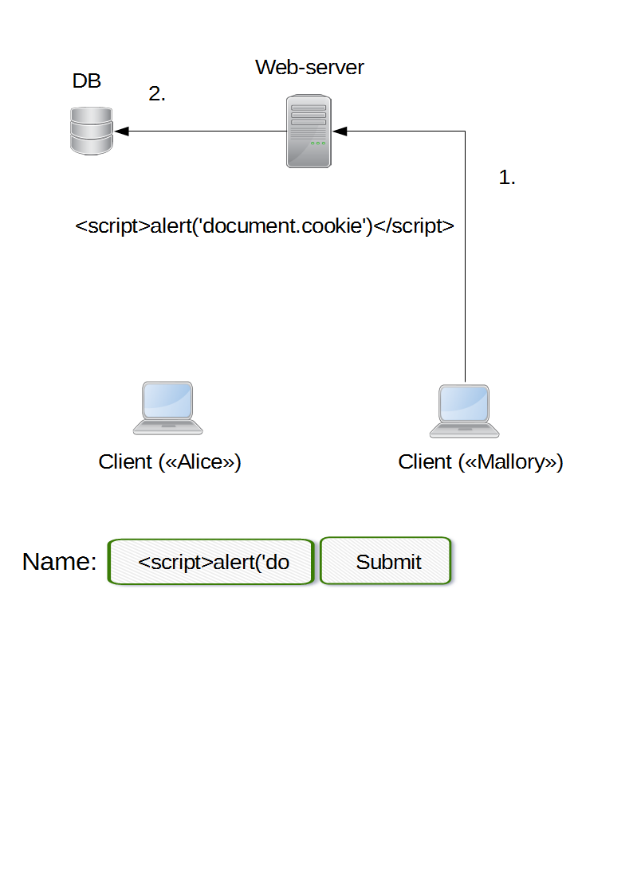
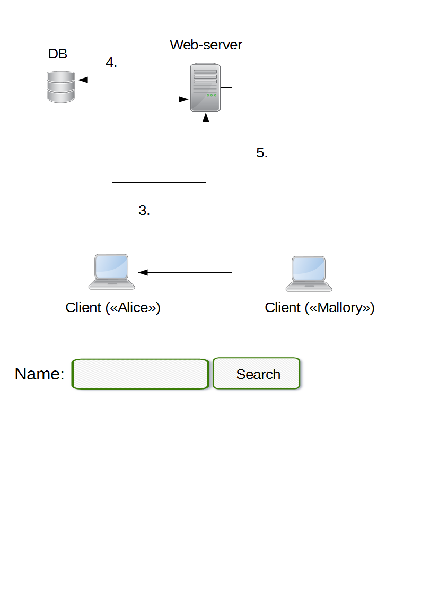
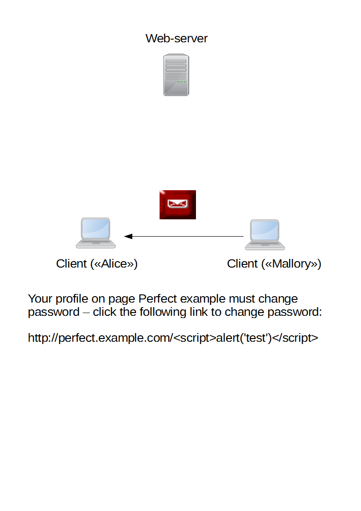
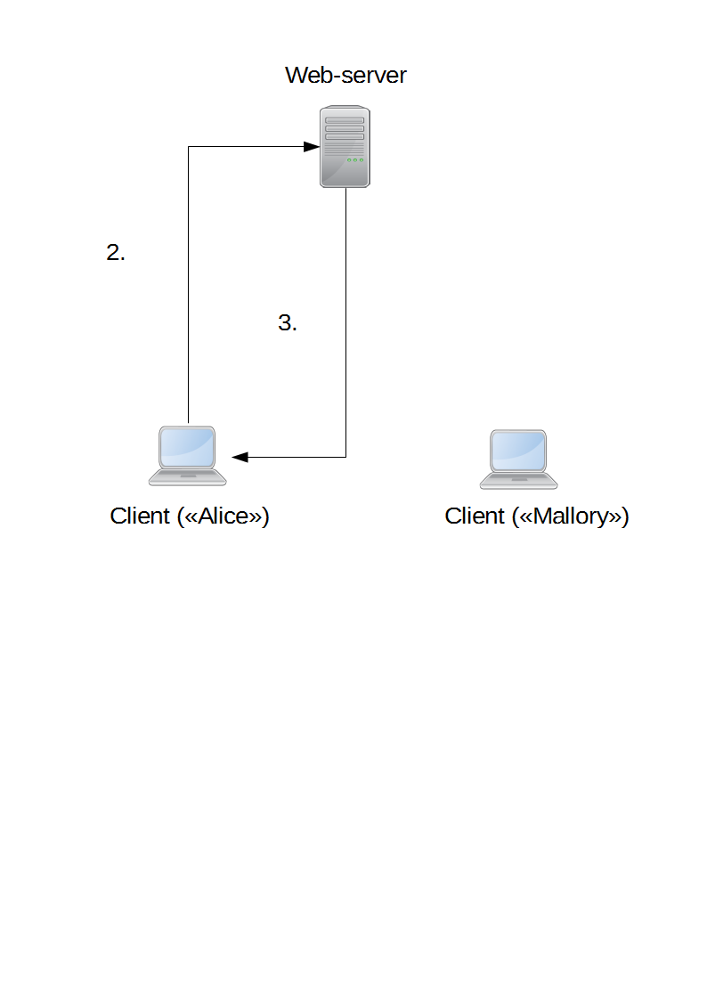

Content Security Policy (CSP)
Hva er din side lastet med?
Created by Mikael Strand / Åshild K. Thorrud
Agenda
- The problem - XSS
- XSS Demo
- Enter CSP - the solution to our problems
- CSP Demo
- Status and Further Reading
Cross-Site Scripting (XSS)
- A1 - Injection
- A2 - Broken Authentication and Session Management
- A3 - Cross-Site Scripting (XSS)
- A4 - Insecure Direct Object References
- A5 - Security Misconfiguration
- A6 - Sensitive Data Exposure
- A7 - Missing Function Level Access Control
- A8 - Cross-Site Request Forgery (CSRF)
- A9 - Using Known Vulnerable Components
- A10 - Unvalidated Redirects and Forwards
What is the cost of cybercrime?

Source: Net Losses: Estimating the Global Cost of Cybercrime, (McAfee, Intel 2014)
What is the cost of cybercrime?
 Norway (2014): 0.64% of GDP = 14.83 Billion NOK
Norway (2014): 0.64% of GDP = 14.83 Billion NOK Per capita: 3793.77 NOK
How prevalent is XSS?

Source: 2013 TRUSTWAVE GLOBAL SECURITY REPORT
Real life examples


Stored vs Reflected

Server vs Client side
Server side stored XSS
Server side stored XSS
Server side reflected XSS
Server side reflected XSS
Demo

How Do I Prevent XSS?
...ESCAPE UNTRUSTED DATA BEFORE PUTTING HERE...
any other normal HTML elements
& --> &
< --> <
> --> >
" --> "
' --> '
/ --> /
content
link Auto-sanitization libraries
- OWASP AntiSamy
- OWASP HTML Sanitizer
How to determine that you are attacked

CSP to the rescue
What is it?
What does it do?
How does it solve my problems?
And does it give me whiter teeth?
CSP policy directives
Content-Security-Policy: default-src 'self' trustedscripts.foo.com;

Response Headers
Accept-Ranges:bytes
Connection:keep-alive
Content-Length:1858
Content-Security-Policy:default-src 'self'; script-src 'self'; img-src 'self' *.theanimalfiles.com *.akamaihd.net *.facebook.com; style-src *; frame-src 'self'; report-uri /_/csp-reports;script-nonce 0fbea756e6846ec42ef8e693a294c7f13dcb323a
Content-Type:text/html
Date:Sat, 30 Aug 2014 08:46:32 GMT
Last-Modified:Sat, 30 Aug 2014 08:45:14 GMT
Server:Jetty(7.x.y-SNAPSHOT)
Via:1.1 vegur
X-Content-Security-Policy:default-src 'self'; script-src 'self'; img-src 'self' *.theanimalfiles.com *.akamaihd.net *.facebook.com; style-src *; frame-src 'self'; report-uri /_/csp-reports;script-nonce 0fbea756e6846ec42ef8e693a294c7f13dcb323a
X-Webkit-Csp:default-src 'self'; script-src 'self'; img-src 'self' *.theanimalfiles.com *.akamaihd.net *.facebook.com; style-src *; frame-src 'self'; report-uri /_/csp-reports;script-nonce 0fbea756e6846ec42ef8e693a294c7f13dcb323a
Whitelists
Reporting
csp-report:
blocked-uri: ""
column-number: 2536
document-uri: "http://csp-demo.herokuapp.com/"
line-number: 2
original-policy: "default-src 'self'; script-src 'self'; img-src 'self' *.facebook.com *.akamaihd.net; style-src *; frame-src 'self'; report-uri /_/csp-reports;script-nonce 7fcd2784d3c60010c90490e36440c58be3611bb5"
referrer: ""
source-file: "http://csp-demo.herokuapp.com/Assets/Scripts/jQuery/jquery-2.1.1.min.js"
status-code: 200
violated-directive: "script-src 'self'"
CSP - Implementation
// Define list of CSP HTTP Headers
this.cspHeaders.add("Content-Security-Policy");
this.cspHeaders.add("X-Content-Security-Policy");
this.cspHeaders.add("X-WebKit-CSP");
// Define CSP policies
cspPolicies.add("default-src 'self'");
cspPolicies.add("script-src 'self'");
cspPolicies.add("img-src 'self' *.theanimalfiles.com *.akamaihd.net");
cspPolicies.add("style-src *");
cspPolicies.add("frame-src 'self'");
cspPolicies.add("report-uri /_/csp-reports");
CSP - deeper into the matter
CSP bans inline scripting, eval(), new Function(), setTimeout([string], ...), and setInterval([string], ...)
Wide variety of sources
- connect-src
- font-src
- frame-src
- img-src
- media-src
- object-src
- style-src
Four keywords are also accepted in the source list:
- 'none'
- 'self'
- 'unsafe-inline'
- 'unsafe-eval'
sandbox
// amazing.js
function doAmazingThings() {
alert('YOU ARE AMAZING!');
}
document.addEventListener('DOMContentReady', function () {
document.getElementById('amazing')
.addEventListener('click', doAmazingThings);
});
Demo - CSP

How do I get going with CSP?
- Make sure you have a browser that supports CSP
- Set up a filter to add CSP headers to the HTTP response
- Define your own policies
But wait....what if I accidentally screw things up?
CSP - Reporting only
Change HTTP response header:Content-Security-Policy: default-src 'self'Content-Security-Policy-Report-Only: default-src 'self'Who uses CSP?
Status
- Developed by the Mozilla Foundation
- W3C candidate
- Content Security Policy 1.1
HTML <meta> element
Reflected-XSS
directive-name = "reflected-xss"
directive-value = "allow" / "block" / "filter"Nonce & Hash
Content-Security-Policy: default-src 'self';
script-src 'self' https://example.com 'nonce-Nc3n83cnSAd3wc3Sasdfn939hc3'Content-Security-Policy: script-src 'sha256-YWIzOWNiNzJjNDRlYzc4MTgwMDhmZDlkOWI0NTAyMjgyY2MyMWJlMWUyNjc1ODJlYWJhNjU5MGU4NmZmNGU3OAo='Does my browser support CSP?

Further Reading
- owasp.org
- W3C-standard
- html5rocks.com
- Mozilla Developer Network
- http://caniuse.com/#feat=contentsecuritypolicy
About us
 Mikael Strand
Mikael Strand  Åshild Thorrud
Åshild Thorrud
Further Reading
You can select from different transitions, like:
Cube -
Page -
Concave -
Zoom -
Linear -
Fade -
None -
Default
Themes
Reveal.js comes with a few themes built in:
Default -
Sky -
Beige -
Simple -
Serif -
Night
Moon -
Solarized
* Theme demos are loaded after the presentation which leads to flicker. In production you should load your theme in the <head> using a <link>.
Global State
Set data-state="something" on a slide and "something"
will be added as a class to the document element when the slide is open. This lets you
apply broader style changes, like switching the background.
Custom Events
Additionally custom events can be triggered on a per slide basis by binding to the data-state name.
Reveal.addEventListener( 'customevent', function() {
console.log( '"customevent" has fired' );
} );
Slide Backgrounds
Set data-background="#007777" on a slide to change the full page background to the given color. All CSS color formats are supported.
Image Backgrounds
<section data-background="image.png">Repeated Image Backgrounds
<section data-background="image.png" data-background-repeat="repeat" data-background-size="100px">Background Transitions
Pass reveal.js the backgroundTransition: 'slide' config argument to make backgrounds slide rather than fade.
Background Transition Override
You can override background transitions per slide by using data-background-transition="slide".
Clever Quotes
These guys come in two forms, inline:
“The nice thing about standards is that there are so many to choose from”
and block:
“For years there has been a theory that millions of monkeys typing at random on millions of typewriters would reproduce the entire works of Shakespeare. The Internet has proven this theory to be untrue.”
Pretty Code
function linkify( selector ) {
if( supports3DTransforms ) {
var nodes = document.querySelectorAll( selector );
for( var i = 0, len = nodes.length; i < len; i++ ) {
var node = nodes[i];
if( !node.className ) {
node.className += ' roll';
}
}
}
}
Courtesy of highlight.js.
Intergalactic Interconnections
You can link between slides internally, like this.
Fragmented Views
Hit the next arrow...
... to step through ...
any type- of view
- fragments
Fragment Styles
There's a few styles of fragments, like:
grow
shrink
roll-in
fade-out
highlight-red
highlight-green
highlight-blue
current-visible
highlight-current-blue
Spectacular image!

Export to PDF
Presentations can be exported to PDF, below is an example that's been uploaded to SlideShare.
Take a Moment
Press b or period on your keyboard to enter the 'paused' mode. This mode is helpful when you want to take distracting slides off the screen during a presentation.